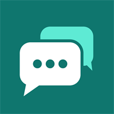

MsgCraft
An unofficial mobile app for reading and sending chat on Minecraft: Java Edition servers, from your phone, without launching the game.
NOT AN OFFICIAL MINECRAFT PRODUCT. NOT APPROVED BY OR ASSOCIATED WITH MOJANG OR MICROSOFT.
Not released yet. MsgCraft is still in development. It is not on the App Store or Google Play, and there is nothing to download.
- What it is
- A chat client for iPhone and Android. It joins a server you choose so you can read that server's chat and send messages and commands.
- Sign-in
- A Microsoft account that owns Minecraft: Java Edition.
- Servers
- The servers you add yourself, and any server one of them moves you to. The developer runs no servers.
- Your data
- Stored on your device. No ads, no analytics, no tracking.
- Developer
- MsgCraft developer (an individual). The developer makes MsgCraft, will publish and sell it, and alone is responsible for it, not Mojang or Microsoft.
- Contact
- Questions about the app or purchases: msgcraft1@gmail.com
What it does
- Keeps a list of your servers and shows their player counts.
- Shows chat with its colors and formatting, and sends messages and commands.
- Alerts you when someone mentions your name. On iPhone this works only while the app is open and you are not looking at that chat.
- Saves chat history on your device.
- Lets you block players, filter profanity and report messages.
- On Android it stays connected in the background with an ongoing notification (on by default, can be turned off in Settings, and you can disconnect at any time). On iPhone it stays connected only while the app is on screen, and reconnects when you return.
What it does not do
It does not show the game world and has no movement, building, combat, inventory or cheat features. It does show your health and food, and when you die it can alert you and has a Respawn button.
Optional helpers
These are off by default and you turn them on yourself. Auto login for login-plugin servers is free. Messages on connect, repeating messages and AFK-kick prevention (an arm swing about once a minute) need Pro. Use them only where the server's rules allow.
Auto reconnect also needs Pro, but it is on by default once you buy it. It tries up to 5 times when a connection drops, rejoins after a kick only if you turn that on, and can be turned off in Settings. Without Pro, the app still rejoins when you return to it after your phone paused it.
Sign-in and game ownership
- In store builds, joining any server, online-mode or offline-mode, requires signing in with a Microsoft account that owns Minecraft: Java Edition (bought, or through Game Pass).
- At sign-in the app reads the account's Minecraft profile and product list from Minecraft services, and refuses an account without Java Edition. It checks again each time it gets a new Minecraft token, and refuses an account the services report as not owning the game.
- Offline accounts are not in store builds. They exist only in internal development and test builds, which are not published on any store.
- You sign in on Microsoft's own sign-in page. The app never sees or stores your Microsoft password. Sign-in tokens stay in the device's secure storage and are only sent to Microsoft and the Minecraft services.
Planned pricing
Free to download, with up to 2 saved accounts and 3 saved servers. A one-time Pro purchase removes those limits and adds messages on connect, repeating messages, AFK-kick prevention, keyword alerts, auto reconnect and the chat log screen. Alerts for your own name are free. Optional tips unlock nothing. No ads and no subscription. Payments go through Apple or Google only. Prices are not set yet.
More information
- Privacy policy
- Terms of use
- Questions: msgcraft1@gmail.com
한국어
MsgCraft
마인크래프트: 자바 에디션 서버의 채팅을 게임을 켜지 않고 휴대폰에서 읽고 보내는 비공식 앱입니다.
마인크래프트 공식 제품이 아닙니다. Mojang 또는 Microsoft가 승인하지 않았으며 이들과 관련이 없습니다.
아직 출시되지 않았습니다. MsgCraft는 개발 중입니다. App Store와 Google Play에 없으며, 내려받을 수 있는 파일도 없습니다.
- 어떤 앱인가요
- iPhone과 Android용 채팅 클라이언트입니다. 여러분이 고른 서버에 접속해 그 서버의 채팅을 읽고 메시지와 명령어를 보냅니다.
- 로그인
- 마인크래프트: 자바 에디션을 가진 Microsoft 계정
- 서버
- 여러분이 직접 추가한 서버와, 그 서버가 옮겨 보내는 서버. 개발자는 서버를 운영하지 않습니다.
- 내 데이터
- 기기에 저장됩니다. 광고, 분석 도구, 사용자 추적이 없습니다.
- 개발자
- MsgCraft 개발자 (개인). MsgCraft는 개발자가 만들고 있고 앞으로 배포하고 판매하며, 책임도 Mojang이나 Microsoft가 아니라 개발자에게 있습니다.
- 문의
- 앱이나 구매에 관한 문의: msgcraft1@gmail.com
할 수 있는 일
- 서버 목록을 저장하고 접속 인원을 보여 줍니다.
- 채팅을 색상과 서식 그대로 보여 주고, 메시지와 명령어를 보냅니다.
- 누군가 내 이름을 말하면 알려 줍니다. iPhone에서는 앱을 쓰는 동안, 그 채팅을 보고 있지 않을 때만 알려 줍니다.
- 채팅 기록을 기기에 저장합니다.
- 플레이어 차단, 욕설 필터, 메시지 신고를 할 수 있습니다.
- Android에서는 백그라운드에서 접속을 유지하고 알림으로 상태를 표시합니다(기본 켜짐, 설정에서 끌 수 있고 언제든 연결을 끊을 수 있음). iPhone에서는 앱이 화면에 있을 때만 접속을 유지하고, 앱으로 돌아오면 다시 접속합니다.
하지 않는 일
게임 화면을 보여 주지 않으며 이동, 건축, 전투, 인벤토리, 치트 기능이 없습니다. 체력과 허기는 보여 주고, 죽으면 알림을 받을 수 있으며 부활 버튼이 있습니다.
선택 기능
기본으로 꺼져 있고 직접 켜야 동작합니다. 로그인 플러그인 서버 자동 로그인은 무료입니다. 접속 시 메시지, 반복 메시지, 잠수 강퇴 방지(약 1분마다 팔 휘두르기)는 Pro가 필요합니다. 서버 규칙이 허용하는 곳에서만 쓰세요.
자동 재접속도 Pro가 필요하지만, 구매하면 기본으로 켜져 있습니다. 연결이 끊기면 최대 5번 다시 시도하고, 강퇴 후 재접속은 직접 켠 경우에만 하며, 설정에서 끌 수 있습니다. Pro가 없어도 휴대폰이 앱을 멈춘 뒤 앱으로 돌아오면 다시 접속합니다.
로그인과 게임 소유 확인
- 스토어용 빌드에서는 온라인 모드든 오프라인 모드든 서버에 접속하려면 마인크래프트: 자바 에디션을 가진(구매 또는 Game Pass) Microsoft 계정으로 로그인해야 합니다.
- 로그인할 때 앱은 마인크래프트 서비스에서 계정의 프로필과 제품 목록을 읽어, 자바 에디션이 없는 계정을 거절합니다. 새 마인크래프트 토큰을 받을 때마다 다시 확인하고, 게임을 갖고 있지 않다고 확인된 계정을 거절합니다.
- 오프라인 계정은 스토어용 빌드에 없습니다. 내부 개발·시험용 빌드에만 있으며, 이 빌드는 어느 스토어에도 올리지 않습니다.
- 로그인은 Microsoft의 로그인 페이지에서 이루어집니다. 앱은 Microsoft 계정 비밀번호를 보거나 저장하지 않습니다. 로그인 토큰은 기기의 보안 저장소에 보관되며 Microsoft와 마인크래프트 서비스에만 전송됩니다.
요금 계획
무료로 내려받을 수 있고 계정 2개와 서버 3개까지 저장할 수 있습니다. 1회 구매 Pro는 이 제한을 없애고 접속 시 메시지, 반복 메시지, 잠수 강퇴 방지, 키워드 알림, 자동 재접속, 채팅 기록 화면을 엽니다. 내 이름 알림은 무료입니다. 선택 사항인 팁으로 열리는 기능은 없습니다. 광고와 구독은 없습니다. 결제는 Apple 또는 Google을 통해서만 이루어집니다. 가격은 아직 정해지지 않았습니다.